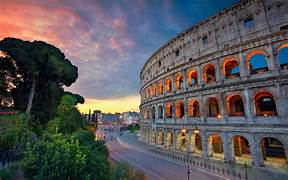

Nombre: Coliseo Romano
País: Italia
Año de construcción: Aproximadamente entre los años 70 y 80 d. C.
El Coliseo Romano fue construido durante el Imperio Romano por orden del emperador Vespasiano y finalizado por su hijo Tito. Fue utilizado como un gran anfiteatro donde se realizaban espectáculos públicos como combates de gladiadores, representaciones teatrales y eventos para entretener a miles de ciudadanos romanos. Con el paso del tiempo se convirtió en uno de los símbolos más importantes de la antigua Roma.
El Coliseo Romano tenía un sistema llamado velarium, una enorme cubierta de tela que protegía a los espectadores del sol y la lluvia durante los eventos. Además, es uno de los monumentos más visitados del mundo.
Siguiente Maravilla →